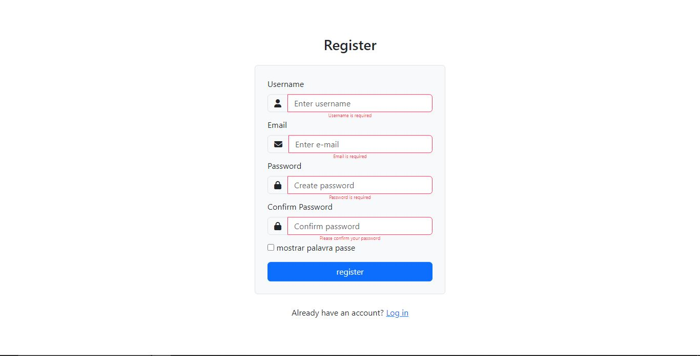

Formulário de Validação de inputs de log in e register usando javascript
Este formulario foi criado usando HTML, CSS Bootstrap, FontAwesome e JavaScript. Através do JavaScript faz se verificação dos campos de formulario se foram preenchidos correctamente antes de enviar os dados
Funcionalidades
- Validação de campos de log in usando JavaScript
- Validação de campos de register usando JavaScript
Tecnologias Utilizadas
Descricao Visual da aplicação


